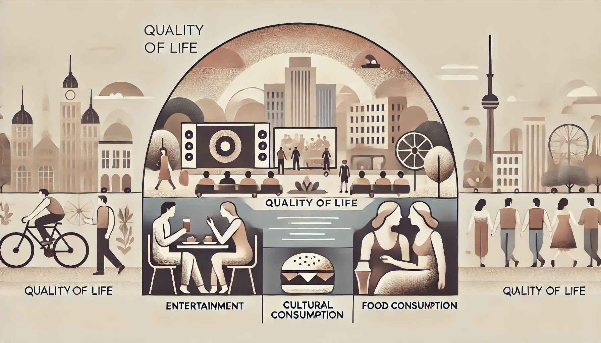
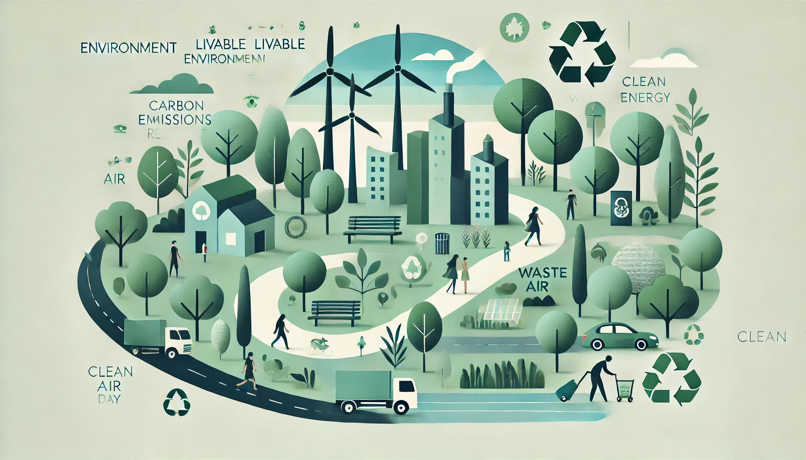
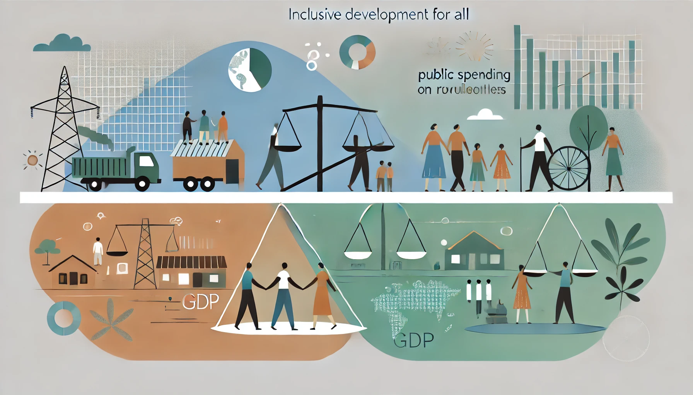

人口高质量评价体系指标说明
1. 人口素质
每万人发明专利拥有量：反映一个地区的科技水平和创新能力，是该地区科学研究、知识产权保护和技术开发及应用等综合实力的集中体现。
大学及以上学历人口占比：能够体现一个地区的教育水平和人力资源水平，与经济发展和社会进步紧密相关。
2. 人口经济发展
人均地区生产总值能够反映一个地区在一定时期内经济活动的总量和生产效率，能够体现地区平均每人能够创造的经济价值。
居民人均可支配收入直接体现地区居民的生活水平及消费能力。

3. 人口生活质量
用教育文化娱乐消费占比能够反映地区居民在精神文化生活的需求，体现地区居民的生活质量。
家庭人均蛋奶制品消费量直接关系到居民的营养状况和健康水平，体现地区居民对高水平生活的追求。

4. 人口宜居环境
用空气优良天数在全年的占直接反映了某地的空气质量水平。
碳排放量关系到全球变暖这一重大环境问题，是对国家节能减碳目标政策的响应。
生活垃圾无害化处理率关系到垃圾的回收和利用对居民健康的影响。

5. 全民共享发展
城乡居民收入占比反映了城乡居民收入在地区收入分配中的相对地位，能够体现城乡均衡发展情况。
一般公共服务支出占GDP比率直接体现了公共服务的普及率和质量，能够展现政府在公共服务方面的投入力度。